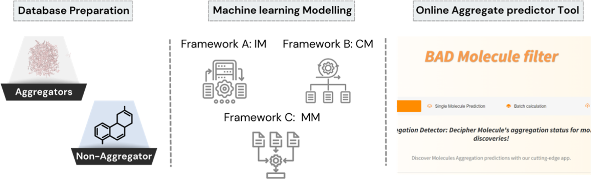

Rebuilt in October 2026. The server that used to answer at this address stopped running, so the tool was moved and the page was written again. The model, the features it reads and the thresholds it reports are unchanged from the 2024 paper. The conversion was checked against the original on 2,000 compounds, where the largest difference in probability was 7.3e-08 and every call agreed. What changed is where the scoring runs and how this page looks, and the source records all of it.
Will this compound aggregate?
Colloidal aggregation is the most common reason a molecule looks active in a biochemical screen without ever touching its target. Draw a structure and the model returns the probability that it forms colloids in the assay.
Score a structure
SMILES are read from the first column. Anything after it is ignored, and a header row is skipped when the first cell reads SMILES, structure, compound, name or id.
SMILES,name CC(=O)Oc1ccccc1C(=O)O,aspirin c1ccccc1,benzene
500 structures per run. Hand it a longer file and the page says so rather than scoring part of it. Running it on your own machine has no limit.
Result
What makes an aggregator?
These eight properties all came out of the SHAP analysis in the paper, which ranks what the models actually key on. Six of them push a prediction toward aggregation. Two pull it the other way. Sort them and find out which.
Pushes toward aggregation
Pulls away from it
How it works
The model published with the 2024 paper, running unchanged.
The model
Each structure becomes 602 Morgan fingerprint bits, radius 2, and 255 Mordred descriptors standardised on the training set. An extremely randomised trees model of 1000 trees returns the probability.
This is the merged model, the one the web tool has always used. It was converted from the original pickle to ONNX so it no longer depends on one version of scikit-learn, then checked against the original on 2,000 compounds. The largest difference in probability was 7.3e-08 and every call agreed.
Run it yourself
For batches above 500, or to keep it working whatever happens to this page:
git clone https://github.com/AbdallahHajal/BAD-Molecule-Filter
cd BAD-Molecule-Filter
pip install -r requirements.txt
python server.pyThat serves this same page at localhost:7860 and scores locally. The model
file is fetched once on first run and cached. Python 3.11.
Cite
Abou Hajal A, Bryce RA, Amor B, Atatreh N. Boosting the Accuracy and Chemical Space
Coverage of the Detection of Small Colloidal Aggregating Molecules Using the BAD Molecule
Filter. J Chem Inf Model 2024.
10.1021/acs.jcim.4c00363
Scoring runs on a Hugging Face Space, which sleeps when nobody is using it. The first run after a quiet spell takes a minute or two to wake it.